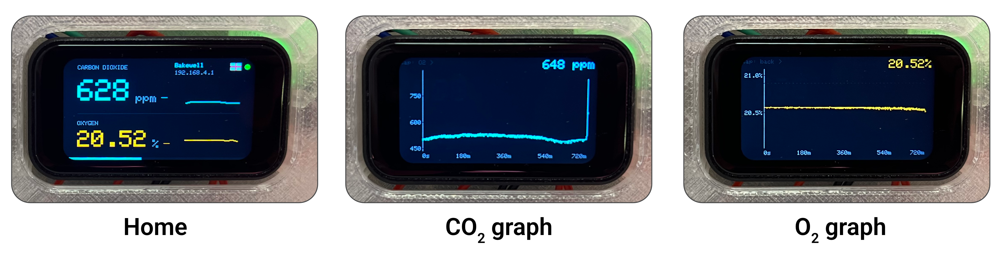
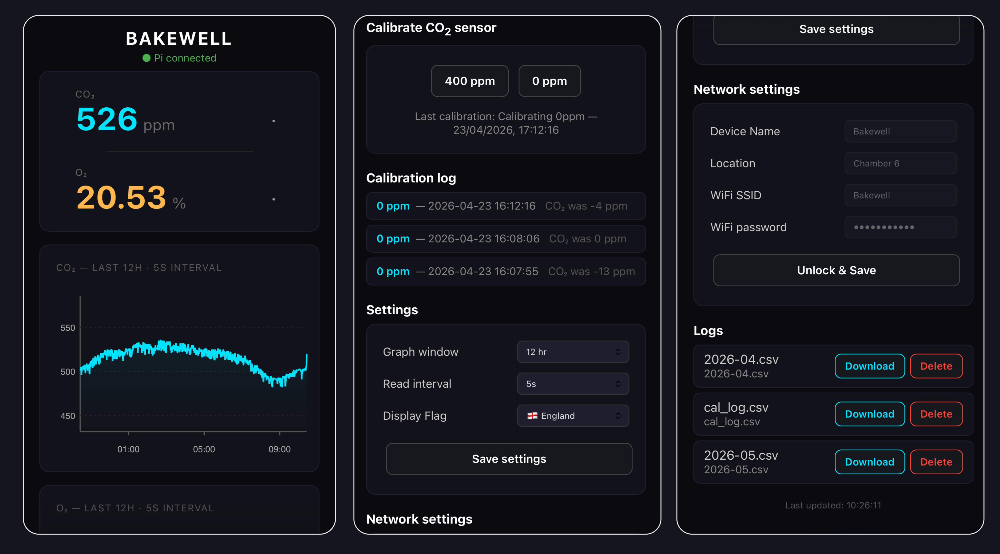
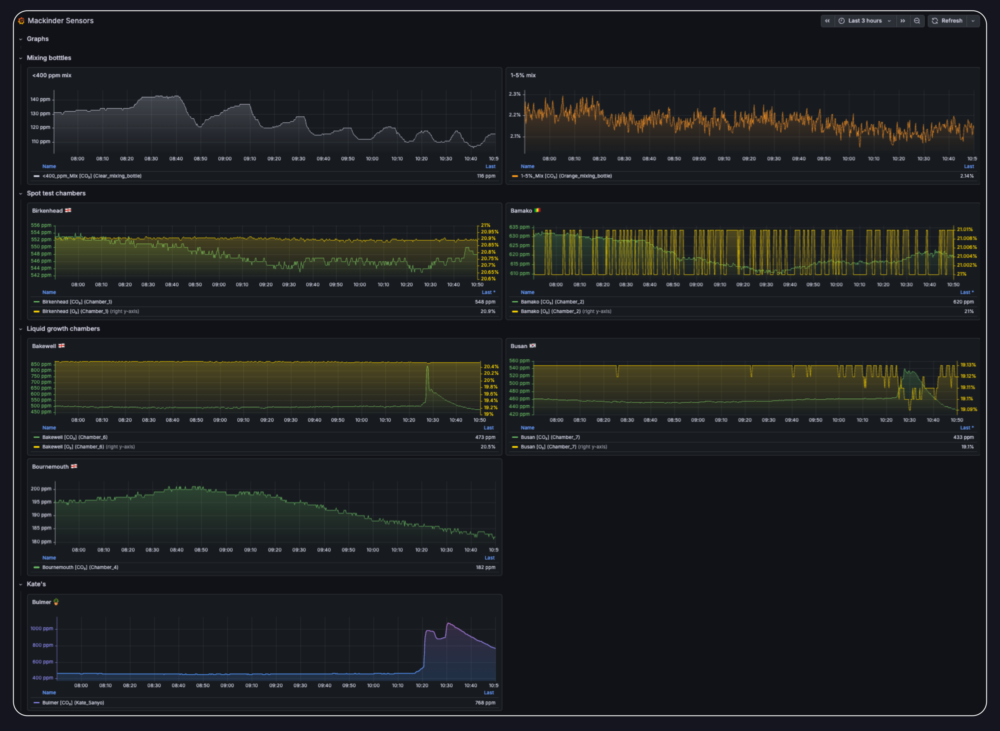

Canary Gas Monitoring¶

An open-source, networked gas monitoring system for laboratory growth chambers, built around the ESP32-S3 microcontroller.
Continuously measures CO₂ (and optionally O₂), logs data locally to SD storage, and streams live telemetry to a central Grafana dashboard through a Raspberry Pi hub.
Overview¶
The system was developed in the Mackinder Lab at the Centre for Novel Agricultural Products (CNAP), University of York, to provide continuous, networked gas monitoring across multiple algae growth chambers.
Key design goals:
- No cloud dependency for core function — all data logged locally to SD card; Pi and Grafana are optional additions
- Easy to deploy — web-configurable without reflashing; each sensor is a self-contained unit
- Long-term logging — FAT32 SD card with >20 years capacity at 5-second intervals
- Lab-realistic calibration — explicit guidance for CO₂ calibration in a real laboratory gas supply context
Features¶
- Two sensor variants — CO₂-only and combined CO₂/O₂
- Touchscreen display — live readings, trend indicators, sparkline history, and graph pages
- Local web interface — live readings, full-resolution graphs, calibration, settings, and CSV download at
192.168.4.1 - Networked monitoring — sensors push to a Raspberry Pi hub forwarding to Grafana Cloud
- Automatic time sync — from Raspberry Pi on connection, or from any browser as fallback
- Fully configurable at runtime — read interval, graph window, device name, location, WiFi credentials via web UI
- K30 CO₂ calibration — 0 ppm and 400 ppm via touchscreen and web interface
- USB analyser bridge — Minir-5 and K30 1% mixing bottle monitors via laptop Python scripts
- Optional solenoid control — hardware provision for automated CO₂ dosing
Sensor Variants¶
| Feature | CO₂ only | CO₂ + O₂ |
|---|---|---|
| CO₂ measurement | ✓ K30 NDIR (0–10,000 ppm) | ✓ K30 NDIR (0–10,000 ppm) |
| O₂ measurement | — | ✓ SEN0322 (0–25%) |
| Touchscreen display | ✓ 1.47" | ✓ 1.47" |
| SD card logging | ✓ | ✓ |
| Local web interface | ✓ | ✓ |
| Raspberry Pi push | ✓ | ✓ |
| O₂ sensor lifetime | — | ~2 years (replaceable) |
System Architecture¶
ESP32 Sensor Units
One per growth chamber
→ WiFi (GasMonitor) →
Raspberry Pi Hub
- Flask receiver
- InfluxDB (local)
- Grafana Cloud sync
Windows / Linux Laptop
Minir-5 + K30 1%
→ WiFi (GasMonitor) →
Same Pipeline
Sent to Raspberry Pi hub
Gallery¶
Hardware & Displays
Assembled Sensor
Fully assembled devices.

Display Screens
Snapshots of the screens shown on the combined device.
Web Interface

Web UI
Browser-based monitoring interface.

Grafana Dashboard
Live metrics and historical visualizations.
Getting Started¶
🔧
Hardware
Parts list, schematics, and 3D print files
💾
Firmware
Arduino IDE setup, libraries, and flashing
📋
Assembly
Step-by-step build guide with photos
🖥️
Raspberry Pi
Hub setup, InfluxDB, and Grafana
📖
User Guide
Day-to-day operation and calibration
🔌
Laptop Bridge
USB analyser scripts for Minir-5 and K30
Built With¶
| Component | Role |
|---|---|
| Waveshare ESP32-S3 | Sensor microcontroller with touchscreen |
| SenseAir K30 | NDIR CO₂ sensor |
| DFRobot SEN0322 | Electrochemical O₂ sensor |
| Raspberry Pi 5 | Central hub and WiFi access point |
| InfluxDB | Local time-series database |
| Grafana | Dashboard and remote monitoring |
| Arduino IDE | Firmware development |
| Autodesk Fusion | Enclosure 3D design |
Acknowledgements¶
Developed at the Centre for Novel Agricultural Products (CNAP), University of York. Thanks to Mark Bentley (Biology workshops) for helping with the enclsoure design and print steps.